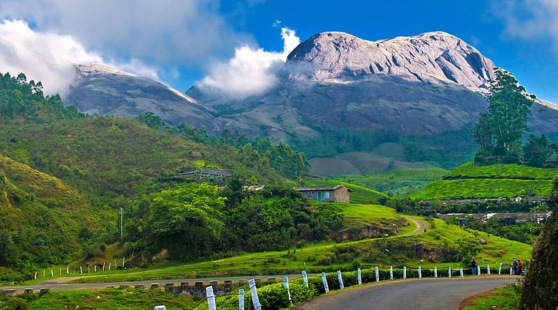
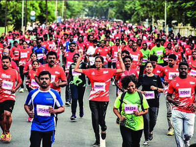

I am C G Mitun Akil. I am currently studying at Indian Institute of Technology, Bhubaneswar, India.
I am presently residing at Coimbatore, Tamil Nadu. I can speak and understand English, Tamil, Kannada
and Hindi . I can speak English fluently . I have serious interst in programming and I am aiming
to be a top notch programmer of India. I like to participate in competitive coding contests.I finished
I finished my schooling at Suguna Pip School, Coimbatore. I like farming and gardening. My hobbies are to
staying fit, playing cricket and to code. I like to indulge in group activities and games whenever its
possible. I can work hard and manage any workload to finish it on time.

I started my Schooling at National Model Matriculation School, Coimbatore till Grade 8. And I finished it
At Suguna Pip School, Coimbaatore. I am currently pursuing BTech CSE degree at IIT, Bhubaneswar. I have
participated in many extra curricular activities like Sports, Dramas etc,. I have been participating in
Coimbatore Maraathon for Cancer relief fund since my Grade 10. I have also been a part of Throwball and
Basketball school team.
I have a good grasp of C ,C++ and HTML languages. I have created prkojects on Banking system and some
some crazy quiz games. I have also created some basic websites as a part of my hobby.
I would like to explore NFT , Cryptocurrencies and Mining of Cryptocurrencies. I am also interested
in effective maintanence of servers and harnessing cloud storage in it.
Done by C G Mitun Akil